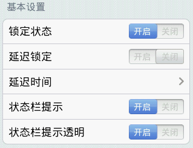
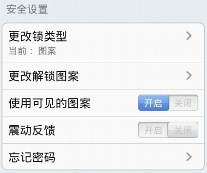
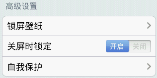

启动/关闭智能锁 （如果您未设置过解锁图案，在启动锁定功能时，您需要设置您的解锁图案）。
在一定的延迟锁定时间里，被保护的程序可以不需要再次输入图形锁解锁。
设置您的延迟锁定时间。
设置是否在状态栏提示智能锁状态。建议您开启，以防止智能锁被任务管理器强行停止而导致保护失效。
设置是否让状态栏提示图标透明。

选择使用图案锁、PIN锁或者密码锁。
更改解锁图案、PIN或者密码。
解锁图案锁时让图案是否可见。
设置是否需要在输入图形锁时进行震动反馈。
设置您的验证邮件或解锁重置问题，可以帮助您在忘记密码时重置解锁图案。

选择您喜欢的锁屏壁纸。
在手机屏幕关闭时，重新锁定被保护的应用程序。
选择是否锁定系统程序管理以及android市场以达到自我保护（默认全部锁定）